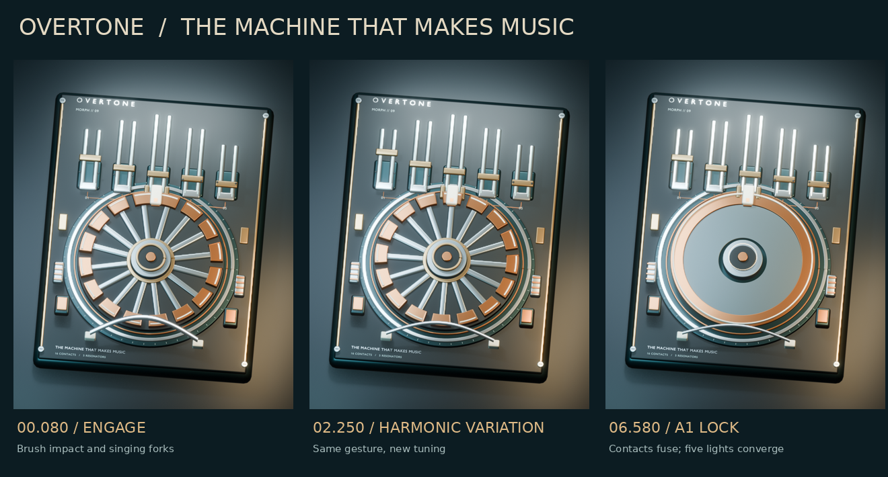
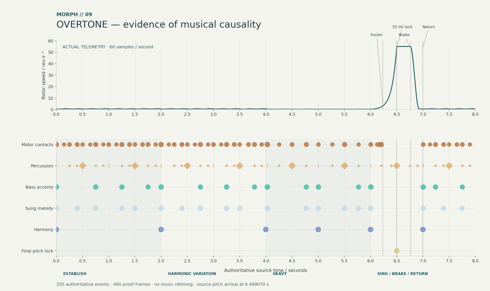
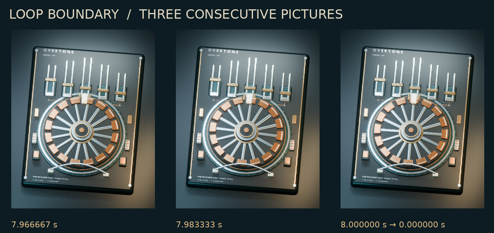

MORPH // 09 — MOTION DESIGN PROOF
The machine that makes music.
OVERTONE becomes a precision electromagnetic instrument. One copper contact enters a ceramic brush; a metal fork answers. The same gesture becomes a groove, a weight, then a sustained pitch.
8.000 seconds384 × 480 · 60 fps16 contacts · 5 resonatorsFixed camera
Watch with sound. Then watch again.
The rotor uses the actual continuous motor telemetry. The band operates separate, visible parts of the mechanism: bass contracts the outer hoop; the sung hook bows the lower silver arch; kick, clap and hats articulate the hub and side fingers.
At the final A1 lock, the central collar closes and the five fork lights converge to ivory. Braking restores the opening rhythm while the instrument stays illuminated.
The MOV retains the approved PCM samples exactly. MP4 uses AAC for convenient viewing.
Editable scene · baked 60 fps animation
Three representative moments

Engage stillHarmonic variation stillPitch lock still
Four bars, one behavior
| 0–2 s | Establish the swung contact–brush–fork response in Am7 immediately. |
|---|
| 2–4 s | Repeat in Fmaj7. The tuning collars slide and the 3.5-second load grips before release. |
|---|
| 4–6 s | Actual half-speed rotation creates a heavier, more deliberate pattern through Dm7 and E7. |
|---|
| 6–8 s | Accelerate, fuse at 6.235 s, lock to A1 at 6.499 s, brake at 6.763 s and return to Am at 7.000 s. |
|---|
Evidence of synchronization

All 480 telemetry samples are preserved. The 52 exported contact events align with the brush crossing within 0.009°; 30 selected tine strikes excite the resonators. All 205 source event times are retained. Their maximum eligible-frame quantization is 16.395 ms; structural events describe the mechanism rather than each producing a separate impulse. No music is retimed.
Every event / CSVNumerical audit / JSON
Continuity through the boundary

Lighting, vibration and tuning include prior-cycle tails. There is no blackout or duplicated closing picture. The unmodified motor has a small physical residual: 0.0125866° of orientation and 0.0718% of speed. Rounded opening telemetry gives the renderer a 0.0124887° residual and a 0.0799% speed difference. Neither is corrected. The sixteen identical rotor features have no unique orientation marker. Raw mechanics are nearly periodic, rather than mathematically exact.
During pitch fusion, an annular surrogate approximates exposure of repeated rotor features. Temporal motion-blur samples are not rendered in this lightweight proof. This is a creative motion proof, with three 768 × 960 stills; no full-resolution animation master has been rendered.
HUMAN CREATIVE REVIEW
Does the contact → vibration gesture read immediately? Does bar three feel heavier? Does the final convergence make the return satisfying?
Paused here for creative approval. Nothing published. DaemonV12, the approved music, motor score and source telemetry are unchanged.
Source: mataindustries/daemonv12 · feat/morph-08-motor-groove · dd705942faec535433b3b030c990e247261ce905
Work branch: feat/morph-09-resonant-rotor